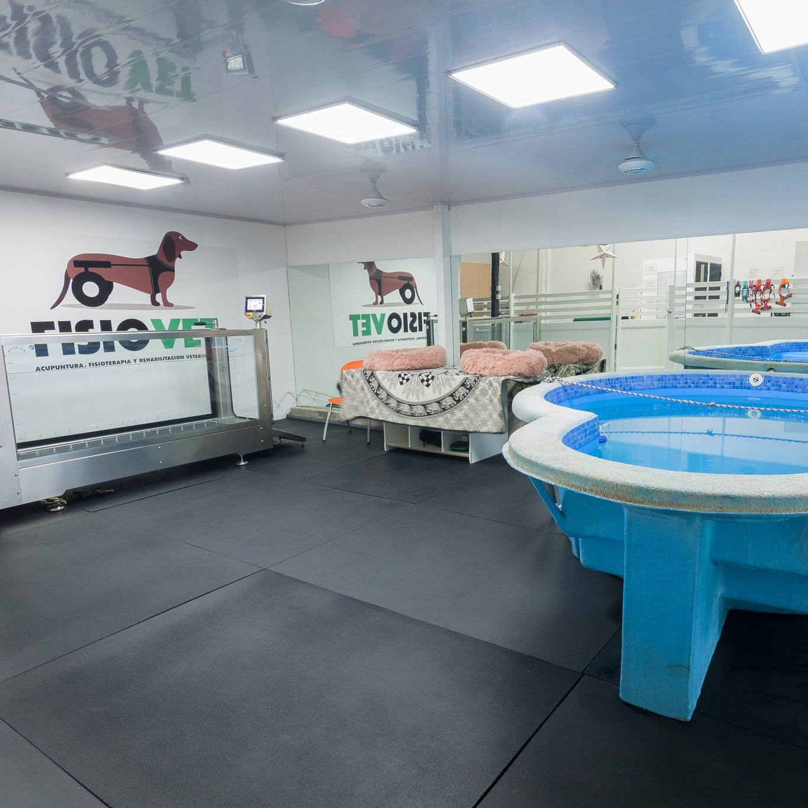

Este mes de diciembre, nuestra clínica se encuentra cumpliendo 6 años 🎉
Durante estos 6 años hemos pasado momentos de todo tipo, pero gracias a todas las personas que creen y ven resultados en nuestro trabajo seguimos creciendo para poder ofrecerles siempre la mejor calidad en los servicios que brindamos, este año estuvo plasmado de grandes cosas, tuvimos una ampliación de nuestra clínica, incluimos el servicio de rayos x para facilitar y agilizar los diagnósticos, nuestro personal creció, teniendo por tiempo completo al @dr.salmeron en nuestra clínica, recibimos varias capacitaciones que involucraron al crecimiento de nuestro personal, incluimos los productos Walkin Pets en nuestra tienda, los cuales ayudan a mascotas con discapacidades a tener una mejor calidad de vida, entre muchas otras cosas buenas que nos pasaron este año.
Muchas gracias a todos ustedes por ser parte de este año de éxitos y estamos seguros de que este siguiente año seguiremos creciendo para ofrecerles siempre el mejor servicio en terapia y rehabilitación de mascotas del país. 🐶🐱
"Falta quote"
En nuestra clínica Fisiovet contamos con gran variedad en alimentos para perritos y gatitos.🐶🐱
Alimentos medicados y escogidos de las mejores marcas para que le brindes a tu mascota una excelente alimentación. 🦴
Entre ellos están alimentos reguladores de peso, alimentos para diabéticos, para mascotas ancianas, mordida pequeña, renal, hipoalergénico, entre otros. Contamos con marcas como Balance, Purina, Nutri Source, VetLife, Proplan, Hill´s.
Además, nuestros servicios se han venido ampliando:
- Termoterapia
- Magento
- Láser
- Ultrasonido
- Electroestimulación
- Electroacupuntura
- Masajes
- Caminadora de agua
- Piscina

Nuestra clínica ha cambiado mucho desde el 2016. Actualmente nuestras instalaciones crecieron para el bien de todos nuestros pacientes. Hoy en día contamos con una clínica especializada en terapia y rehabilitación para mascotas 🐶, la cual cuenta con tres consultorios, tienda de productos veterinarios, recepción y diferentes espacios para que nuestros pacientes tengan un servicio de calidad